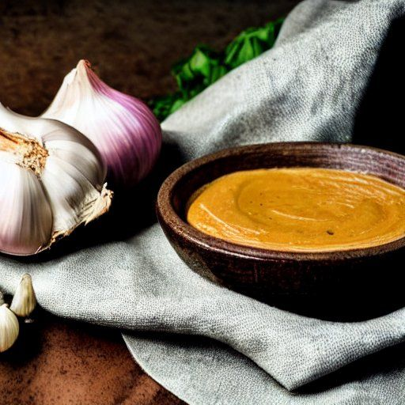

Aïoli chinoise sucrée
Ingrédients
-
2 gousses d'ail

-
1 1/2 c. à thé de moutarde de dijon
-
1 soupçon d'huile de sésame
-
2 c. à table de sauce huître
-
125 mL d'huile neutre (huile de canola, huile de tournesol, ...)
-
2 c. à table de sirop d'érable
Instructions
Dans un bol rond, combiner l'ail, la moutarde, l'huile de sésame et la sauce huître. Bien mélanger à l'aide d'une fourchette.
- 2 gousses d'ail
- 1 1/2 c. à thé de moutarde de dijon
- 1 soupçon d'huile de sésame
- 2 c. à table de sauce huître
Ajouter petit à petit 125 mL d'huile neutre, très lentement, tout en mélangeant vivement à l'aide d'une fourchette. Toujours tourner dans le même sens. À chaque ajout, attendre que l'huile soit intégrée à l'émulsion avant d'en incontourn.
Ajouter 2 c. à table de sirop d'érable et bien mélanger.
Garder au réfrigérateur pour que la sauce garde une texture de mayonnaise. Mélanger avant de servir si nécessaire.